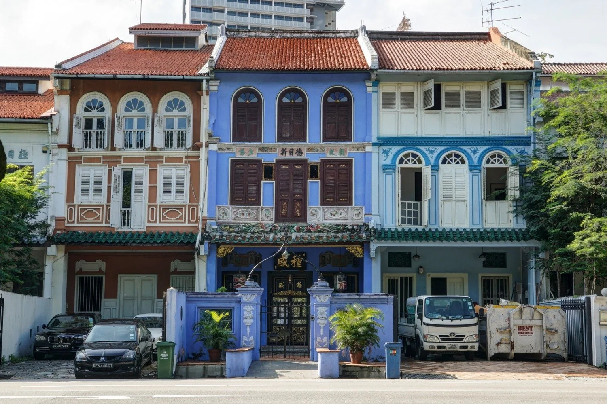
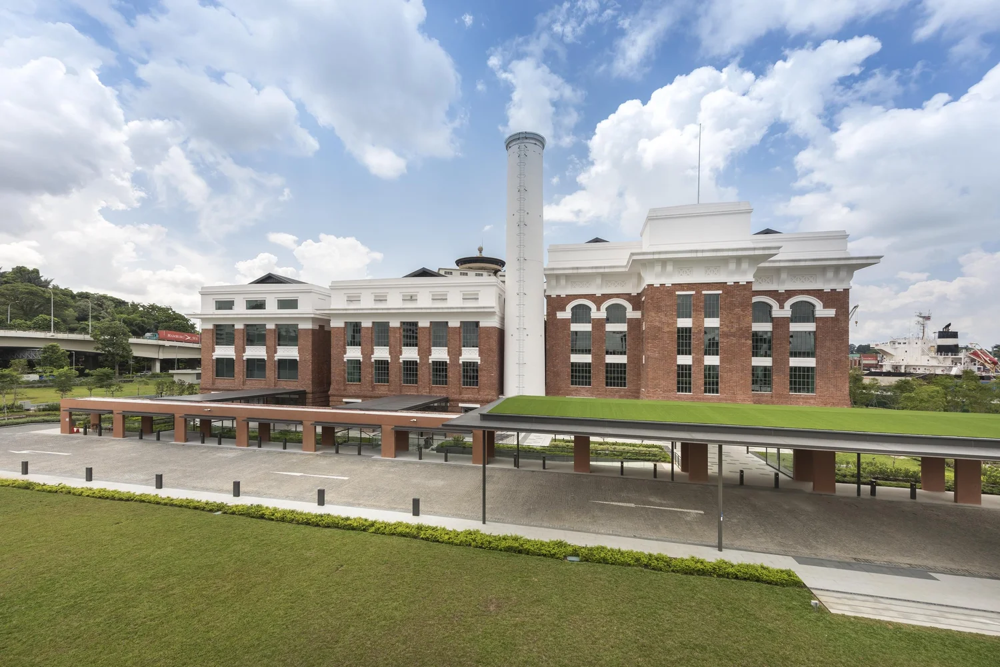

Conservation · Orchard Road · Singapore
Temasek Shophouse
Why it matters: a high-visibility adaptive-reuse project demonstrates multi-trade heritage capability.
Strategy & commercial review · SGX: LCC
A brilliant year, not yet a proven pattern.
A licensed heritage niche and asset-light balance sheet produced a 35.5% gross margin in FY2026. The score rewards exceptional finances; the thesis still needs proof that closeout gains can become repeatable economics.
01 · Evidence · Research score
Lum Chang Creations sits in the Satisfactory band. Financial Strength contributes more than half the score; single-country, single-segment exposure keeps Growth and Risk well behind.
Four points separate LCC from Strong. Better disclosure and a repeatable margin matter more than another headline contract.
Net cash and returns above 50% lift the score. One country, one reported segment and thin customer data hold it back.
The sensitivity range is 59-70. A margin nearer brokers' 23-29% expectation would remove much of FY2026's profit without changing the company's licences or heritage credentials.
| Component | Weight | Rating /5 | Points | Assessment |
|---|---|---|---|---|
| Five-year revenue CAGR | 6 | 5.0 | 6.0 | 64% from FY2022; 37% from a fairer FY2023 base. |
| Net profit margin | 7 | 3.4 | 4.8 | Median 11.4%; above the 10.7% peer average. |
| ROIC / ROE | 9 | 5.0 | 9.0 | Median ROE about 60% on a small equity base. |
| Cash-flow stability | 9 | 4.0 | 7.2 | Positive in known years; FY2022 and FY2026 unavailable. |
| Balance-sheet strength | 9 | 5.0 | 9.0 | S$32m net cash and minimal borrowings. |
| Component | Weight | Rating /5 | Points | Assessment |
|---|---|---|---|---|
| Brand recognition | 2 | 3.0 | 1.2 | Awards and a leading specialist position. |
| Competitive advantage | 7 | 4.0 | 5.6 | Licences, craft and returns far above peers. |
| Market share | 4 | 4.0 | 3.2 | Estimated 14-17% of Singapore revitalisation. |
| Customer relationships | 5 | 3.0 | 3.0 | Long contracts; repeat-customer data undisclosed. |
| Geographic reach | 2 | 1.0 | 0.4 | About 99% of revenue comes from Singapore. |
| Component | Weight | Rating /5 | Points | Assessment |
|---|---|---|---|---|
| Industry growth | 6 | 2.0 | 2.4 | Output near 4% a year; BCA expects softer demand. |
| Technology adoption | 4 | 2.0 | 1.6 | Undisclosed in a craft-led business. |
| New-market expansion | 6 | 2.0 | 2.4 | Malaysia is licensed but about 1% of revenue. |
| Revenue diversification | 5 | 1.0 | 1.0 | One reported segment with no split by trade. |
| Strategic partnerships | 4 | 2.0 | 1.6 | Parent support; related work about 4% of revenue. |
| Component | Weight | Rating /5 | Points | Assessment |
|---|---|---|---|---|
| Economic resilience | 3 | 2.0 | 1.2 | COVID-period performance is undisclosed. |
| Customer diversification | 4 | 2.0 | 1.6 | Customers undisclosed; four awards are about 83% of the book. |
| Technology resilience | 3 | 3.0 | 1.8 | Hand craft is relatively hard to automate. |
| Regulatory resilience | 2 | 3.0 | 1.2 | One regime; foreign-worker rules still matter. |
| Operational resilience | 3 | 3.0 | 1.8 | Many sites, with key-person risk in the managing director. |
02 · Evidence · The group
Lum Chang Interior turns conserved and ageing buildings into new commercial uses. Fixed prices make estimating and closeout judgement as important as physical execution.
Owners repurpose conserved and ageing buildings for new uses.
Licences, conservation know-how and a project record win tenders.
Progress billing converts the order book while estimating and final accounts determine margin.
Every link depends on judgement: what to bid, what an old wall will reveal, and how the final account closes.
03 · Exhibit · Portfolio & services
The portfolio ranges from rare conservation craft to competitive commercial fit-out. Those visual differences matter because they imply different bidding power and margin durability.
Why it matters: a high-visibility adaptive-reuse project demonstrates multi-trade heritage capability.

Why it matters: specialist work on a culturally significant property supports licence-led differentiation.
Why it matters: combines conservation with a new commercial use, widening project value.

Why it matters: landmark delivery builds the references needed to qualify for scarce heritage work.
Fewer licensed rivals and more valuable craft judgement.
Shorter jobs, more bidders and greater price competition.
Complex upgrades to occupied public and private buildings.
04 · Evidence · Financials
The five-year chart answers the central question directly: FY2026 profit was made by margin expansion, not by selling more work.
At FY2025's 19.7% gross margin, FY2026 revenue would have produced about S$20m of gross profit, not S$36m.
The starting base after the record billing year.
Margin added S$16m before lower volume and other movements.
Up 72% even as revenue declined.
05 · Evidence · Order book
The book has been replenished, but concentration is high. Registries, two churches and Teck Ghee station account for roughly 83% of the total.
Stable order-book value does not automatically mean growth when the annual revenue run-rate has risen sharply.
06 · Evidence · Market position
LCC's estimated 14-17% share of Singapore's revitalisation niche and strong returns earn credibility. The valuation still assumes part of FY2026 will reverse.
A heritage specialist earning six times Kingsmen's margin on a similar P/E is being priced as if the margin is temporary.
07 · Evidence · Demand economics
Heritage reuse is licence-led and long-cycle; commercial fit-out follows refresh budgets; public A&A work follows infrastructure and government spending.
Owners turn churches, shophouses and warehouses into productive assets.
Corporate, retail and hotel refresh cycles create shorter, more competitive work.
Government projects and transport infrastructure support multi-year demand.
Labour, levies and materials can move long before a fixed-price contract ends.
Fixed when the work and unknowns are estimated.
A 25% planned gross margin.
A 5% cost miss moves margin by about 3.8 points.
Progress payments fund the work, but estimating and final-account judgement decide the profit.
08 · Decision · Strategic frameworks
The moat is strongest in conservation, where permissions, artisans and references limit entry. It weakens sharply in ordinary fit-out.
Few licensed conservation rivals; fit-out is crowded and price-led.
Public buyers and large owners set tender terms.
Skilled workers and subcontractors are scarce; mega-projects compete for them.
Licences, artisans and a credible heritage record take years to build.
Conserved buildings cannot simply be demolished and rebuilt.
Exposed: competitive fit-out work, fixed-price cost overruns and a labour market LCC does not control.
09 · Decision · Risk matrix
Select a risk to inspect its trigger and mitigation. Labels communicate the position without relying on colour alone.
10 · Decision · Strategy & outlook
The sequence starts with proving the margin, then broadening the order book, then expanding beyond Singapore.
Price conservation on value and measure bid-to-final margin.
Win more mid-sized projects to reduce reliance on a few awards.
Partner locally for public tenders and lead with conservation.
Report revenue by trade, top clients and annual cash flow.
Interactive FY2027 scenario
About S$88m of the existing book is billed and S$27m of new wins convert in-year at a 28% gross margin.
Illustrative model
About 9% below FY2026
Current score
The open question is whether that right earns a 35% gross margin or 23%. FY2027 does not need to repeat the peak; it needs to prove that more than the balance sheet is durable.
Sources & evidence
Evidence grade C: about half of weighted evidence is audited or independent. Revenue by trade, customer concentration and complete full-year cash-flow data were not disclosed or not found.
Research standard
Figures are in Singapore dollars and financial years end 30 June unless stated. Market data are as of 6 October 2026. This is an independent strategy and commercial review based on public information and the supplied research, not an investment recommendation or price target.
Project images are sourced from the company's official portfolio and presented as analytical exhibits.